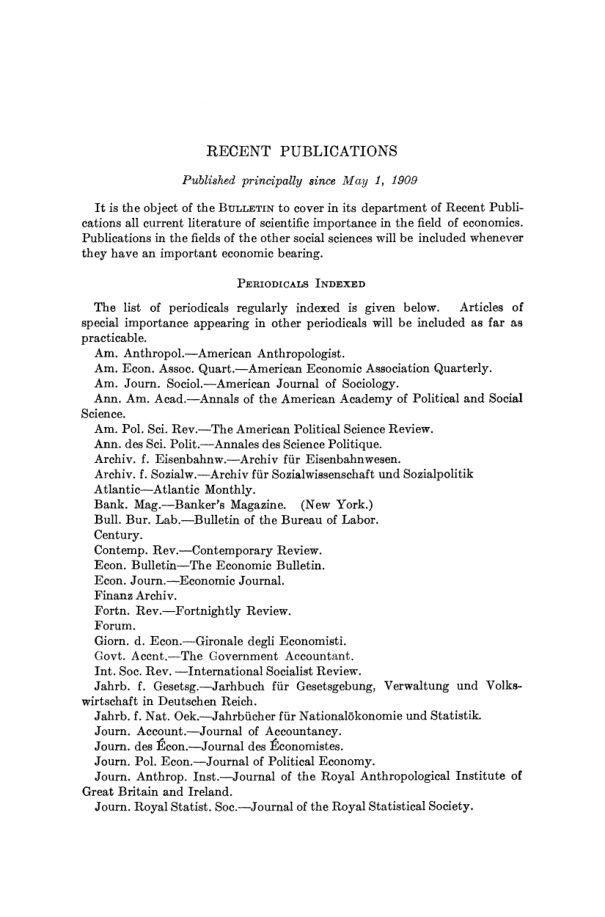

O Bulletin de setembro de 1909: censo, fumo e cidades
Leitura: 4 min
Notas sobre o programa dos 25 anos da associação e os preparativos do censo de 1910, 25 resenhas com peso para transportes, finanças e governo municipal, e a bibliografia corrente desde maio de 1909.


O número de setembro de 1909 abre com o programa da reunião que celebraria os 25 anos da associação, em Nova York, de 27 a 31 de dezembro, junto com a American Historical Association. Dos quatro economistas europeus convidados, só o italiano havia respondido: Maffeo Pantaleoni.
O que contavam as notas?
O censo domina as nomeações. Edward Dana Durand, novo diretor do Census, assumiu em junho de 1909, a menos de um ano da contagem decenal, e escolheu William Franklin Willoughby como diretor assistente. Durand convocou economistas como especialistas, de J. L. Coulter, no questionário agrícola, a William B. Bailey, no de população. A data de referência seria 15 de abril de 1910.
Outras notas registram a indicação de A. Piatt Andrew por Taft para diretor da Casa da Moeda e a nomeação de uma comissão tarifária presidida por H. C. Emery, de Yale, com base na lei tarifária Payne. Kemmerer assume em Cornell a recém-criada cátedra de economia e finanças.
Há dois obituários. Ernst von Halle, da Universidade de Berlim, morreu em 29 de junho, antes dos 40 anos; a nota é assinada H. C. E. James A. LeRoy, cônsul americano em Durango, no México, e autor de Philippine Life in Town and Country, morreu em fevereiro.
Que livros foram resenhados?
São 25 resenhas, duas delas sobre vários livros. Transportes abrem a seção: Carroll W. Doten resenha o livro de John Lathrop Mathews sobre o Mississippi e o de Logan G. McPherson sobre tarifas ferroviárias; Lewis H. Haney, dois estudos franceses sobre tarifas ferroviárias e navegação interior.
Mercados e concorrência vêm em seguida. Henry C. Emery resenha o relatório da comissão do governador Hughes sobre especulação com títulos e mercadorias. M. B. Hammond resenha a primeira parte do relatório do Commissioner of Corporations sobre a indústria do fumo.
Ainda assim, para Hammond, dificilmente se diria que a combinação “produziu uma ‘restrição ao comércio’ no sentido econômico do termo”. (produced a "restraint of trade" in the economic sense of that term)
Em moeda e finanças públicas, H. Parker Willis resenha a história do Banco da Inglaterra de A. Andréadès e uma síntese alemã da história monetária americana; Carl C. Plehn, o tratado de Max von Heckel e os ensaios de C. B. Fillebrown, presidente da liga do imposto único de Massachusetts.
População e assistência formam outro bloco: três resenhas de William B. Bailey sobre natalidade e imigração e dois livros de Edward T. Devine, um sobre a criação de uma agência de emprego em Nova York, outro sobre as causas da miséria.
Na resenha de Charles A. Ellwood, o livro de Devine procura mostrar que “as causas da miséria humana não estão fora do controle humano”. (the causes of human misery are not beyond human control)
Fecham a seção o governo municipal, com quatro livros resenhados juntos por Clinton Rogers Woodruff, três livros de clérigos sobre a questão social, resenhados por Nicholas P. Gilman, e títulos sobre Fiji, o serviço público federal e o México.
Como se organizava a bibliografia?
A seção Recent Publications reúne obras publicadas principalmente desde 1º de maio de 1909, precedida da lista de periódicos indexados.
Na minha leitura
Na minha leitura, a resenha do relatório sobre o fumo é a peça de método mais útil do número. Participação alta na produção não basta para provar restrição ao comércio: enquanto a combinação ampliava sua fatia, as empresas fora de seu controle também aumentavam a produção. A distinção entre concentração e exclusão de concorrentes, que o direito da concorrência ainda discute, aparece ali em poucas linhas.
As notas sobre o censo mostram como se produzia a estatística oficial: um quadro permanente de funcionários, reforçado por economistas emprestados pelas universidades.
Glossário
- Combinação (trust)
- grupo de empresas sob controle comum, formado para coordenar produção e preços.
- Tarifa especial
- tarifa ferroviária reduzida para casos particulares, compensada por condições impostas ao expedidor; o oposto da tarifa geral.
- Imposto único (single tax)
- proposta de Henry George de concentrar a tributação no valor da terra.
Artigos desta edição
- Personal and Miscellaneous Notes — editores (pp. 213–224). Programa da celebração dos 25 anos da associação, preparativos do censo de 1910, nomeações, prêmios e sociedades, e obituários de Ernst von Halle e James A. LeRoy. JSTOR
- John Lathrop Mathews, Remaking the Mississippi — Carroll W. Doten (pp. 225–226). Relato não técnico sobre o aproveitamento do rio Mississippi, publicado em meio ao debate sobre a conservação dos recursos naturais. JSTOR
- Simon Sagorsky, Die Arbeiterfrage in der Südrussischen Landwirtschaft — James B. Morman (pp. 226–227). História econômica dos camponeses e agricultores do sul da Rússia, da emancipação de 1861 a 1904. JSTOR
- Logan G. McPherson, Railroad Freight Rates in Relation to the Industry and Commerce of the United States — Carroll W. Doten (pp. 228–230). Tentativa de descrever o desenvolvimento industrial e comercial dos Estados Unidos desde a ferrovia e sua relação com o transporte, mais do que um tratado sobre tarifas. JSTOR
- Charles Peaudecerf, Les Tarifs Spéciaux des Chemins de Fer — Lewis H. Haney (pp. 230–232). Tese sobre a estrutura das tarifas ferroviárias especiais da França, com classificação das tarifas e comparação com outros países. JSTOR
- Louis Marlio, La Politique Allemande et la Navigation Intérieure, 2ª ed. — Lewis H. Haney (pp. 232–233). Monografia sobre a política prussiana de vias navegáveis, escrita como argumento no debate francês sobre pedágios e iniciativa privada. JSTOR
- Report of Governor Hughes' Committee on Speculations in Securities and Commodities — Henry C. Emery (pp. 234–235). Relatório do estado de Nova York sobre as bolsas, que evita intervenção legislativa e pede aplicação mais rigorosa das regras pelas próprias bolsas. JSTOR
- Henry Rand Hatfield, Modern Accounting — Frederick A. Cleveland (pp. 235–238). Exposição de princípios contábeis, do balanço e da avaliação de ativos à depreciação, às reservas e às contas de custo, com exemplos de balanços de ferrovias e indústrias. JSTOR
- Commissioner of Corporations, Report on the Tobacco Industry, Part I — M. B. Hammond (pp. 238–240). História, organização e grau de controle da combinação do fumo em cada ramo da manufatura, com uma descrição da produção e do comércio de tabaco. JSTOR
- Edward T. Devine, Report on the Desirability of Establishing an Employment Bureau in the City of New York — H. R. Mussey (pp. 241–242). Relatório sobre uma agência de emprego para Nova York, com apêndices sobre a má distribuição da mão de obra como causa do desemprego. JSTOR
- A. Andréadès, History of the Bank of England — H. Parker Willis (pp. 242–244). História completa do Banco da Inglaterra até cerca de 1903, traduzida por Christabel Meredith e prefaciada por H. S. Foxwell. JSTOR
- Johannes Scheffler, Das Geldwesen der Vereinigten Staaten von Amerika im 19. Jahrhundert — H. Parker Willis (pp. 244–245). Síntese para leitores alemães da história monetária americana, de antes de 1792 à lei de 1900. JSTOR
- Max von Heckel, Lehrbuch der Finanzwissenschaft, vol. I — Carl C. Plehn (pp. 245–248). Primeiro volume de um manual sistemático de finanças públicas, com a descrição geral do campo e as receitas de regalias e taxas. JSTOR
- C. B. Fillebrown, The A B C of Taxation, with Other Essays and Addresses — Carl C. Plehn (pp. 248–250). Ensaios, discursos e estudos estatísticos sobre o imposto único, revistos e atualizados pelo presidente da liga do imposto único de Massachusetts. JSTOR
- Sicard de Plauzoles, La Maternité et la Défense Nationale contre la Dépopulation — William B. Bailey (pp. 250–252). Argumento a favor de medidas públicas para elevar a natalidade na França, cujo crescimento populacional havia praticamente cessado. JSTOR
- Charles Salvy, L'Immigration aux États-Unis et les Lois Fédérales — William B. Bailey (pp. 252–253). Estudo jurídico sobre exclusão, naturalização e legislação americana de imigração, com um capítulo comparativo sobre leis de outros países. JSTOR
- E. C. Dittmar, Die Einwanderung gebildeter weiblicher Erwerbsbedürftiger nach den Vereinigten Staaten — William B. Bailey (pp. 253–254). Livro de uma jornalista do New Yorker Staats-Zeitung sobre as perspectivas de emprego de mulheres alemãs instruídas nos Estados Unidos. JSTOR
- Edward T. Devine, Misery and Its Causes — Charles A. Ellwood (pp. 254–256). Conferências Kennedy de 1909 que atribuem a miséria moderna a desajustes sociais evitáveis, como doença, desemprego e isolamento. JSTOR
- B. Kirkman Gray, Philanthropy and the State — Lillian Brandt (pp. 256–260). Obra póstuma e inacabada sobre a história social do século XIX, continuação da história da filantropia inglesa do autor. JSTOR
- Bertha M. H. Shambaugh, Amana: The Community of True Inspiration — E. H. Baker (pp. 260–262). Relato da comunidade de Amana, em Iowa, baseado em pesquisa e em convivência de muitos anos com seus moradores. JSTOR
- Clinton Rogers Woodruff (ed.), Proceedings of the Pittsburgh Conference for Good City Government and the Fourteenth Annual Meeting of the National Municipal League — Thomas Raeburn White (pp. 262–265). Anais da conferência da National Municipal League de novembro de 1908 em Pittsburgh, com trabalhos e debates sobre reforma municipal. JSTOR
- William Bennett Munro, The Government of European Cities; Horace E. Deming, The Government of American Cities; Frederic C. Howe, The British City; Henry S. Lunn, Municipal Lessons from Southern Germany — Clinton Rogers Woodruff (pp. 265–271). Quatro livros sobre governo municipal, a começar pelo manual de Munro sobre cidades inglesas, francesas e prussianas. JSTOR
- Edwin L. Earp, Social Aspects of Religious Institutions; R. J. Campbell, Christianity and the Social Order; Walter Rauschenbusch, Christianity and the Social Crisis — Nicholas P. Gilman (pp. 271–274). Três livros de clérigos de denominações protestantes diferentes sobre a questão social. JSTOR
- Basil Thomson, The Fijians: A Study of the Decay of Custom — Ulysses G. Weatherly (pp. 274–275). Descrição da transição social e econômica em Fiji, do direito costumeiro à concorrência moderna, por um ex-funcionário com dez anos no arquipélago. JSTOR
- Foltz, The Federal Civil Service as a Career — H. Parker Willis (pp. 276–277). Manual para candidatos e servidores do serviço público federal, com a organização e os métodos de seleção do governo nacional. JSTOR
- François Trentini, La Prospérité du Mexique — J. W. Jenks (pp. 278). Volume ilustrado, em parte guia para imigrantes e investidores, sobre o governo, a geografia e as condições econômicas do México. JSTOR
- Recent Publications (pp. 279–319). Bibliografia corrente, sobretudo de obras publicadas desde 1º de maio de 1909, precedida da lista de periódicos indexados, com livros e artigos por seção temática. JSTOR
Fontes
- Personal and Miscellaneous Notes (pp. 213–224). JSTOR · Internet Archive (PDF)
- [untitled] The Economic Bulletin, (1909-09-01), pages 225-226 (pp. 225–226). JSTOR · Internet Archive (PDF)
- [untitled] The Economic Bulletin, (1909-09-01), pages 226-227 (pp. 226–227). JSTOR · Internet Archive (PDF)
- [untitled] The Economic Bulletin, (1909-09-01), pages 228-230 (pp. 228–230). JSTOR · Internet Archive (PDF)
- [untitled] The Economic Bulletin, (1909-09-01), pages 230-232 (pp. 230–232). JSTOR · Internet Archive (PDF)
- [untitled] The Economic Bulletin, (1909-09-01), pages 232-233 (pp. 232–233). JSTOR · Internet Archive (PDF)
- [untitled] The Economic Bulletin, (1909-09-01), pages 234-235 (pp. 234–235). JSTOR · Internet Archive (PDF)
- [untitled] The Economic Bulletin, (1909-09-01), pages 235-238 (pp. 235–238). JSTOR · Internet Archive (PDF)
- [untitled] The Economic Bulletin, (1909-09-01), pages 238-240 (pp. 238–240). JSTOR · Internet Archive (PDF)
- [untitled] The Economic Bulletin, (1909-09-01), pages 241-242 (pp. 241–242). JSTOR · Internet Archive (PDF)
- [untitled] The Economic Bulletin, (1909-09-01), pages 242-244 (pp. 242–244). JSTOR · Internet Archive (PDF)
- [untitled] The Economic Bulletin, (1909-09-01), pages 244-245 (pp. 244–245). JSTOR · Internet Archive (PDF)
- [untitled] The Economic Bulletin, (1909-09-01), pages 245-248 (pp. 245–248). JSTOR · Internet Archive (PDF)
- [untitled] The Economic Bulletin, (1909-09-01), pages 248-250 (pp. 248–250). JSTOR · Internet Archive (PDF)
- [untitled] The Economic Bulletin, (1909-09-01), pages 250-252 (pp. 250–252). JSTOR · Internet Archive (PDF)
- [untitled] The Economic Bulletin, (1909-09-01), pages 252-253 (pp. 252–253). JSTOR · Internet Archive (PDF)
- [untitled] The Economic Bulletin, (1909-09-01), pages 253-254 (pp. 253–254). JSTOR · Internet Archive (PDF)
- [untitled] The Economic Bulletin, (1909-09-01), pages 254-256 (pp. 254–256). JSTOR · Internet Archive (PDF)
- [untitled] The Economic Bulletin, (1909-09-01), pages 256-260 (pp. 256–260). JSTOR · Internet Archive (PDF)
- [untitled] The Economic Bulletin, (1909-09-01), pages 260-262 (pp. 260–262). JSTOR · Internet Archive (PDF)
- [untitled] The Economic Bulletin, (1909-09-01), pages 262-265 (pp. 262–265). JSTOR · Internet Archive (PDF)
- [untitled] The Economic Bulletin, (1909-09-01), pages 265-271 (pp. 265–271). JSTOR · Internet Archive (PDF)
- [untitled] The Economic Bulletin, (1909-09-01), pages 271-274 (pp. 271–274). JSTOR · Internet Archive (PDF)
- [untitled] The Economic Bulletin, (1909-09-01), pages 274-275 (pp. 274–275). JSTOR · Internet Archive (PDF)
- [untitled] The Economic Bulletin, (1909-09-01), pages 276-277 (pp. 276–277). JSTOR · Internet Archive (PDF)
- [untitled] The Economic Bulletin (1909-09-01), page 278 (pp. 278). JSTOR · Internet Archive (PDF)
- Recent Publications (pp. 279–319). JSTOR · Internet Archive (PDF)
- Sumário da edição no JSTOR: The Economic Bulletin, vol. 2, nº 3.
Documento em domínio público (EUA, publicado antes de 1931), via JSTOR Early Journal Content e Internet Archive. Resumo e comentário do autor deste site, sem afiliação com a American Economic Association. Encontrou um erro? Escreva: a correção é publicada no próprio texto, com data.
← Nº 100 · Barnett, 1909: os tipógrafos e a anatomia de um sindicato Nº 102 · Price, 1909: a reforma do seguro de vida em Nova York →